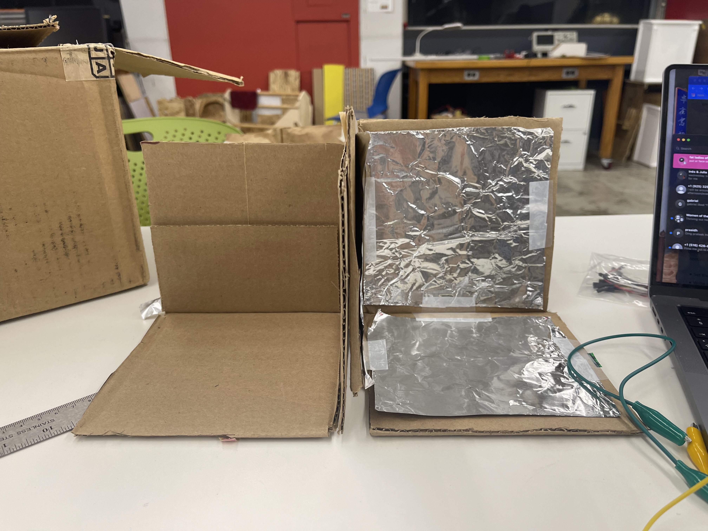

<style>
h3 {
color: DeepPink;
}
h2 {
color: DeepBlue;
text-align: center;
}
img {
display: block;
margin-left: auto;
margin-right: auto;
}
</style>
<div class="container-fluid">
### Final Project
<h1> The 3D Theramin</h1>
<p1>
For my final project, I wanted to create a musical instrument of some sort. For a long time I have been fascinated with early electronic instruments like the Theramin, an early sensor-based instrument which allows the performers to change volume and pitch parameters exclusively based on the distance between one's hand and the sensor.<br>
<iframe width="560" height="315" src="https://www.youtube.com/embed/K6KbEnGnymk" title="YouTube video player" frameborder="0" allow="accelerometer; autoplay; clipboard-write; encrypted-media; gyroscope; picture-in-picture" allowfullscreen></iframe>
<br> <br>
My initial goal was to explore the idea of making a theramin polyphonic: the original theramin only allows for one tone to be produced at a time owing to its setup assigning one parameter to each hand. I could not simply just remove the volume parameter and have pitch assigned to both hands: including volume is essential to making the instrument 'expressive' and gestural. It would also be cumbersome to turn sound on and off if both hands controlled pitch—a foot pedal would be the only reasonable way to do this, and would seem excessibly bulky.
<br> <br>
While discussing this with Nathan and considering a variety of sensor options that could increase the parameters that could be controlled with each hand, he mentioned the option of a 3D capacitative sensor box.
<a href="https://www.instructables.com/DIY-3D-Controller/">The concept is based on this tutorial, where you can use the box to play tictactoe!</a><br>
To make my version of this project you will need
- 2 amplifiers <br>
- An arduino uno <br>
- 3+ 10k resistors<br>
- Cardboard <br>
— A breadboard <br>
— Two speakers <br>
— Lots of wires and alligator clips <br> <br>
Firstly I assembled a cardboard & foil box that is similar to the tutorial above. I knew I wanted to make a *slightly* more attractive and polished contraption for my final project, but I tested out the form of it with some scrap cardboard. Here's how it looked:
<br>
<video controls width="350">
<source src="protobox.mp4"
type="video/mp4">
</video> <br>
I figured out that if I created two of the 3D sensors back to back, I could use both hands to control 3 parameters! The would mean that, at the very least, each hand could control the full capacity of the original theramin (pitch, volume), as well as including an additional parameter, such as pan, delay, or something else all together. <br>

<br> <br>
Next I took to fusion 360 and designed an inclusive box form that could cater for both 3D sensing environments. I learned a lot about designing in Fusion from this process, mostly following these tutorials but adapting for the specific needs of my project. Essentialy I was creating a slot-together box with two faces, and then a divider in between. I also added two stand legs to elevate the box and give it a more polished look.
<iframe width="560" height="315" src="https://youtu.be/vT_FH3lL-3A" title="YouTube video player" frameborder="0" allow="accelerometer; autoplay; clipboard-write; encrypted-media; gyroscope; picture-in-picture" allowfullscreen></iframe> <br> <br>
<iframe width="560" height="315" src="https://youtu.be/7riGolu7BpA" title="YouTube video player" frameborder="0" allow="accelerometer; autoplay; clipboard-write; encrypted-media; gyroscope; picture-in-picture" allowfullscreen></iframe>
<img src="solder.png" alt="My soldered power connection" width="400" class="center">
<br> <br>
And here's the circuit plugged into the mains and my laptop:
<img src="circ2.png" alt="My completed circuit" width="400" class="center">
<br><br>
The code I used to control the stepper is as follows:
</p1>
<pre>
<code>
// defines pins numbers
const int stepPin = 3;
const int dirPin = 4;
// defines pins numbers
const int stepPin = 3;
const int dirPin = 4;
// here comes a bunch of 'useful' vars; dont mind
int coun;
bool dir=0;
int del;
int c=1912;
int cf=1805;
int d= 1703;
int df=1607;
int e=1517;
int f=1431;
int ff=1351;
int g= 1275;
int gf=1203;
int a=1136;
int af=1072;
int b=1012;
int c1=floor(c/2);
int cf1=floor(cf/2);
int d1=floor(d/2);
int df1=floor(df/2);
int e1=floor(e/2);
int f1=floor(1431/2);
int ff1=floor(1351/2);
int g1= floor(1275/2);
int gf1=floor(1203/2);
int a1=floor(1136/2);
int af1=floor(1072/2);
int b1=floor(1012/2);
int e0=e*2;
int g0=g*2;
int b0=b*2;
int af0=af*2;
int a0=a*2;
int f0=f*2;
int use=180;
int tempo=120;
int oct=5;
void setup() {
// Sets the two pins as Outputs
pinMode(stepPin,OUTPUT);
pinMode(dirPin,OUTPUT);
}
void loop() {
oct=5;
// Here you put your music code
note(e1,250);
note(e1,500);
note(e1,250);
pa(250);
note(c1,250);
note(e1,500);
note(g1,1000);
note(g,1000);
note(c1,500);
pa(250);
note(g,250);
pa(500);
note(e,500);
pa(250);
note(a,250);
pa(250);
note(b,250);
pa(250);
note(af,250);
note(a,500);
note(g,330);
note(e1,330);
note(g1,330);
note(a1,500);
note(f1,250);
note(g1,250);
pa(250);
note(e1,250);
pa(250);
note(c1,250);
note(d1,250);
note(b,250);
pa(1000);
// Rob scallon Rain.
for (int i = 0; i < 3; i++){
note(d,100);
pa(use);
note(f,100);
pa(use);
note(c1,100);
pa(use);
note(f,100);
pa(use);}
note(c1,100);
pa(use);
note(c1,100);
pa(use);
note(af,100);
pa(use);
note(a,100);
pa(use);
for (int i = 0; i < 3; i++){
note(c,100);
pa(use);
note(e,100);
pa(use);
note(af,100);
pa(use);
note(e,100);
pa(use);}
note(af,100);
pa(use);
note(af,100);
pa(use);
note(a,100);
pa(use);
note(f,100);
pa(use);
for (int i = 0; i < 3; i++){
note(d,100);
pa(use);
note(f,100);
pa(use);
note(af,100);
pa(use);
note(f,100);
pa(use);}
for (int i = 0; i < 3; i++){
note(af0,100);
pa(use);
note(d,100);
pa(use);
note(f,100);
pa(use);
note(a,100);
pa(use);}
}
void note(int num,long dur) {
del=(num*oct)/10;
dir=!dir;
digitalWrite(dirPin,dir);
coun=floor((dur*5*tempo)/del);
for(int x = 0; x < coun; x++) {
digitalWrite(stepPin,HIGH);
delayMicroseconds(del);
digitalWrite(stepPin,LOW);
delayMicroseconds(del);
}
}
void pa(int durp){
int ker=floor(durp/100)*tempo;
delay(ker);
}
</code>
</pre>
<p2>
This code allows you to input simple functions to control the stepper and produce pitched tones, as set out in the outset of the code.
<br> <br>
I could adjust it using the function note(num,dur), with num defining the note I wanted it to play, and dur setting the duration of the note. pa(durp) would set out a pause between notes, with durp defining the duration of the pause in milliseconds. The variable 'tempo' could effect the speed overall.
</p2>